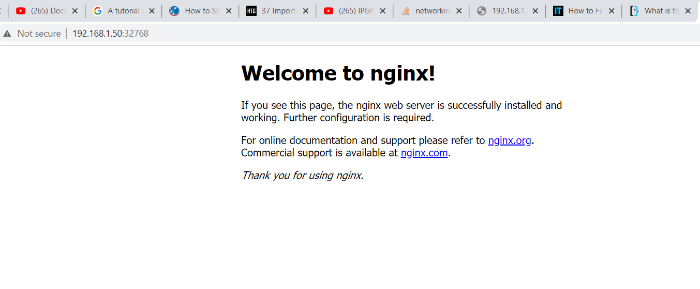

We are going create a simple web portal through nginx by inputting this command: “docker run -d -P ----name web nginx” Next you are going to look for the port and ip address to see where the website is running on, to find this information type “docker port web” and “docker-machine ip default. Type the ip address following the last five digits of the 80/tcp. Example: 192.168.64.1:32781 Once, information is found you can type this in your web browser search bar and you will get a display for a default web server called nginx
To personalize this web page, first you want to create your a directory and call it my site, the command would be mkdir mysite. Next, create a file page in that site called index.html, echo " a new website" > index.html. This just writes text " a new website" on the nginx server. Finally, run this site using docker run -d -P -v $Home/mysite:/usr/share/nginx/ html \ (fit to your path). This will run a webpage on the same IP address as before with the text "a new webiste"
<>